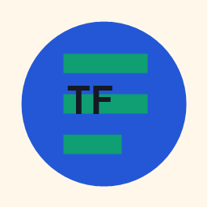

User Authentication
Designed for login and protected account workflows.

TaskForgeTask management application
Create, track, filter, and complete work from one clean website. This static version is simple to run and easy to push to GitHub.
Designed for login and protected account workflows.
Create, read, update, and delete tasks from the board.
Live counters show total, open, and completed work.
Switch between all, open, and done tasks.
Works neatly on laptop, tablet, and mobile screens.
Interactive demo
This folder uses a simple structure: HTML, CSS, JavaScript, one image folder, and a README. Push the management folder to GitHub.